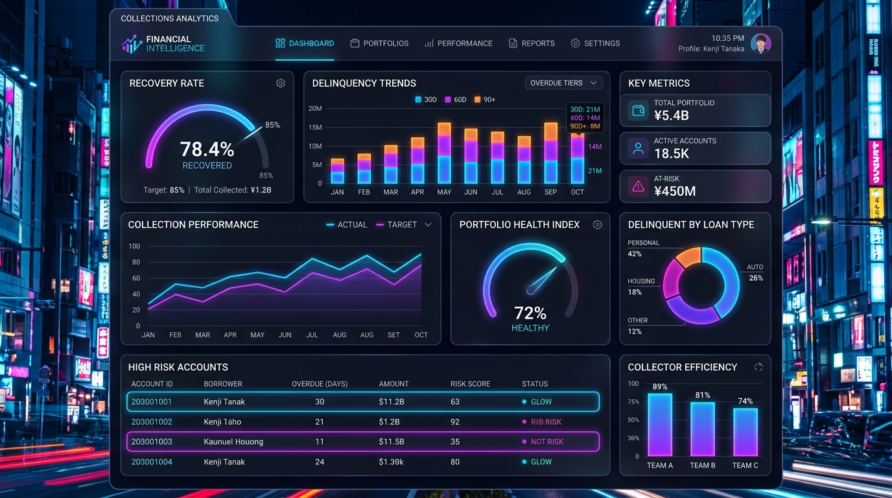
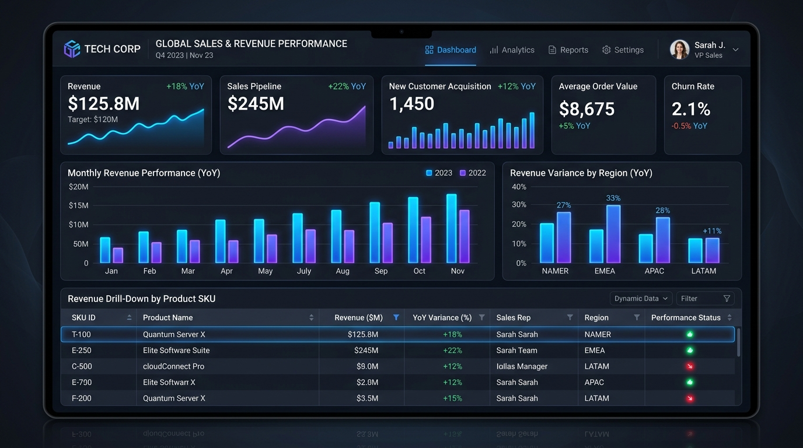
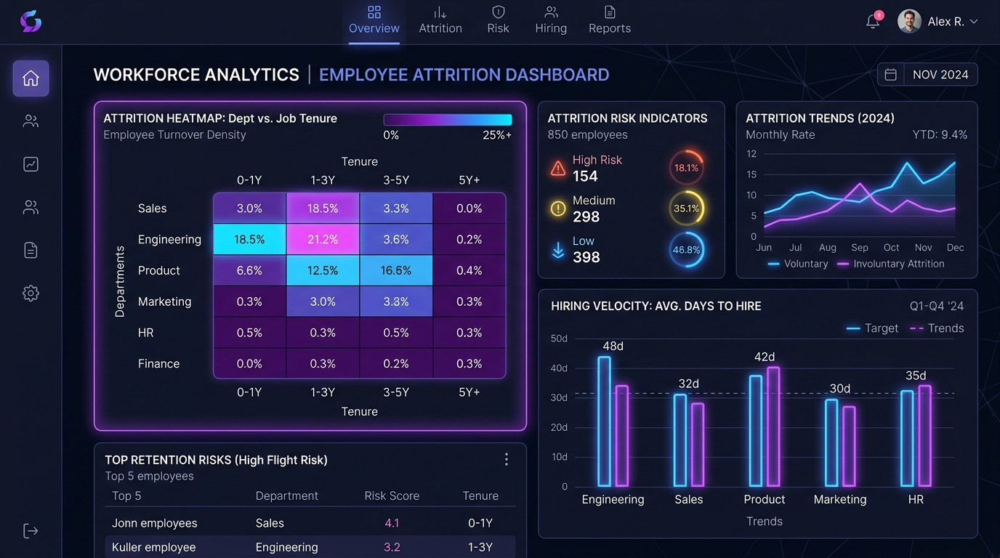

Data Analyst with 1+ year of experience delivering end-to-end analytics solutions — from data extraction and pipeline design to executive-ready dashboards — across elderly care, digital analytics, and education domains. B.Tech in AI & Data Science (CGPA: 8.37).
A results-driven data professional recognized for milestone project delivery, pipeline accuracy, and stakeholder communication.
👋 Hello! I'm Mohamed Yasin, a Data Analyst & BI Developer with 1+ year of experience building end-to-end reporting solutions for executive stakeholders.
I specialize in architecting data extraction workflows across SQL Server Management Studio (SSMS), PostgreSQL, and Google Cloud Platform (GCP), developing complex Power BI dashboards, and building machine learning models in Python.
Core competencies across data lifecycle engineering:
🏆 VTAB Square's Rising Star of the Year 2025:
Awarded in recognition of successfully delivering a milestone analytics project with outstanding performance, taking four concurrent reporting lines live under tight timelines.
Expertise across Analytics, SQL, ETL & Data Science
Proven work experience at VTAB Square & Grad Twin, paired with strong academic performance in AI & Data Science.
Upload, view, update, and manage official certificates from Accenture, British Airways, IBM, Infosys, and MongoDB.
Explore 25+ real-world company reporting solutions, AI/ML models, and executive BI dashboards.
Built an interactive Power BI dashboard consolidating real-time sales and operational data for elderly care services, surfacing total revenue and monthly growth to guide decisions.

Built an interactive Power BI dashboard analyzing loan disbursement, banking performance, and customer insights with dynamic filters that improved business decision-making.

Engineered a real-time DDoS anomaly detection system using LSTM deep learning models with Python, TensorFlow, Ryu Controller, and Mininet, achieving 98.2% accuracy.

Applied exploratory data analysis and supervised ML models (Linear Regression, K-Nearest Neighbors) to uncover rainfall patterns and build predictive models.
Architected digital analytics dashboards parsing website traffic, user acquisition funnels, conversion rates, and campaign ROI metrics.
Designed an analytical reporting dashboard tracking LLM inference latency, token usage costs, accuracy evaluation scores, and user prompt throughput.
Engineered an educational reporting dashboard tracking student attendance trends, test score distributions, and department performance metrics.
Select production code written by Mohamed Yasin and simulate live execution to evaluate output results.
Active & Ready
I am actively seeking Data Analyst & BI Developer roles. Feel free to reach out directly via email, phone, or LinkedIn!
DATA ANALYST | 1+ Year of Experience
Data Analyst with 1+ year of experience delivering end-to-end analytics solutions — from data extraction and pipeline design to executive-ready dashboards — across elderly care, digital analytics, and education domains. Proficient in SQL, Python, and Power BI, with a track record of translating complex datasets into clear, decision-ready insights for cross-functional stakeholders.